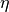
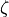
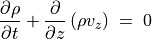
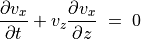
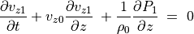
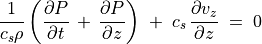
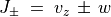

磁気流体力学波¶
- 著者
花輪知幸（千葉大学）
基礎方程式¶
連続の式
(1)¶
運動方程式
(2)¶
(3)¶
エネルギー収支
(4)¶
マックスウェル方程式
(5)¶
(6)¶
オームの法則
(7)¶
ここではEinsteinの記法を採用して書いている。今回のサマースクールでは粘性が小さく ( )、電気伝導度が無限大( ) である極限を考える。また変位電流を無視する。この近似は、平均自由行程が十分に短いと近似したことと同じである。また重力場や加熱・冷却も無視できると考える。この近似を行うと、運動方程式とマックスウェル方程式は
(8)¶
(9)¶
と書き換えられる。本章ではこのように近似した理想磁気流体力学方程式を使って磁気流体波を論じる。使用する変数名をテーブルにまとめる。
時刻
座標
密度
圧力
温度
比エントロピー
単位質量あたりの加熱率
単位質量あたりの冷却率
電流密度
磁場
電場
電気伝導度
重力ポテンシャル
光速度
 ずり粘性 (shear viscosity)
 体積粘性 (bulk viscosity)
単位質量あたりの内部エネルギー
速度
単位質量あたりのエネルギー
単位質量あたりのエンタルピー
気体定数
定積比熱
定圧比熱
保存形式¶
粘性が無視でき(inviscid)、電気伝導度が無限大である場合について考える。このとき流体力学方程式は次のようにまとめられる。
(15)¶
(16)¶
(17)¶
(18)¶
(19)¶
(20)¶
式 (17) を導出するにあたり、 熱力学の関係式
(21)¶
を用いた。
ベクトルを用いると上記の流体力学方程式は
(22)¶
![\begin{equation}
\mbox{\boldmath$U$} \; = \;
\left(
\begin{array}{c}
\rho \\ \rho v _x \\ \rho v _y \\ \rho v _z \\ B _x \\ B _y \\ B _z \\ \rho E
\end{array}
\right) \, , \hskip 0.5cm
\mbox{\boldmath$F _x $} \; = \;
\left(
\begin{array}{c}
\rho v _x \\ \rho v _x ^2 \, + \, P \, \displaystyle
\, + \, \frac{\mbox{\boldmath$B$}^2}{8\pi} \, - \, \frac{B _x ^2}{4\pi} \\
\rho v _x v _y \, \displaystyle - \,\frac{B _x B _y}{4\pi}
\\ \rho v _x v _z \, \displaystyle - \, \frac{B _x B _z}{4\pi} \\ 0 \\
v _x B _y \, - \, v _y B _x \\ v _x B _z \, - \, v _z B _x \\ \rho H v _x \, - \,
\displaystyle \frac{B _x}{4\pi}
(\mbox{\boldmath$v$}\cdot\mbox{\boldmath$B$})
\end{array}
\right) \, , \hskip 0.5cm
\mbox{\boldmath$F _y $} \; = \;
\left(
\begin{array}{c}
\rho v _y \\ \rho v _y v _x \, \displaystyle - \, \frac{B _y B _x}{4 \pi}
\\ \rho v _y ^2 \, + \, P \,\displaystyle
+ \, \frac{\mbox{\boldmath$B$}^2}{8\pi} \, - \, \frac{B _y ^2}{4\pi}
\\ \rho v _y v _z \displaystyle - \, \frac{B _y B _z}{4 \pi}
\\ v _y B _x \, - \, v _x B _y \\
0 \\ v _y B _z \, - \, v _y B _z \\ \rho H v _y \, - \, \displaystyle
\frac{B_y}{4\pi} \, (\mbox{\boldmath$v$}\cdot\mbox{\boldmath$B$})
\end{array}
\right) \, , \nonumber
\end{equation}
\begin{equation}
\mbox{\boldmath$F _z $} \; = \;
\left(
\begin{array}{c}
\rho v _{z} \\ \rho v _{z} v _x \, \displaystyle
- \, \frac{B _z B _x}{4 \pi} \\
\rho v _z v _y \, - \, \displaystyle \frac{B _z B _y}{4\pi}
\\ \rho v _z ^2 \, + \, P \, + \, \displaystyle
\frac{\mbox{\boldmath$B$} ^2}{8\pi}
\, - \, \frac{B _z ^2}{4\pi}
\\ \rho v _y v _z \\ v _z B _x \, - \, v _x B _z \\
v _z B _y \, - \, v _y B _z \\ 0 \\ \rho H v _z \, - \, \displaystyle \frac{B _z}{4\pi} \,
(\mbox{\boldmath$v$}\cdot\mbox{\boldmath$B$})
\end{array}
\right) \, , \hskip 0.5cm
\mbox{\boldmath$S$} \; = \;
\left( \begin{array}{c}
0 \\ \rho g _x \\ \rho g _y \\ \rho g _z \\ 0 \\ 0 \\ 0 \\ \rho \mbox{\boldmath$v$}
\cdot \mbox{\boldmath$g$}
\end{array} \right) \nonumber
\end{equation}](_images/math/3605045531e873353952137d445d4a55ff3cef9a.png)
と表せる。ここで  は状態ベクトル、 , , は流束、 は源泉項と呼ばれる。
は状態ベクトル、 , , は流束、 は源泉項と呼ばれる。
線形波¶
流体力学波¶
すべての物理量は  や
や  に依らず、 だけの関数とする。この状況では波は平面波に限られる。また最初は簡単のため磁場や重力場は存在しないとする。このとき運動方程式は
に依らず、 だけの関数とする。この状況では波は平面波に限られる。また最初は簡単のため磁場や重力場は存在しないとする。このとき運動方程式は
(23)¶
(24)¶
(25)¶
(26)¶
(27)¶
このとき全ての変化は平面波と考えられる。
もし時間変化がない定常状態では、 , , , ,  , はすべて一定。この状態に対して摂動を考える。
, はすべて一定。この状態に対して摂動を考える。
(28)¶
(29)¶
(30)¶
(31)¶
(32)¶
(33)¶
ただし状態方程式を解くと が得られるので、
(34)¶
ここで は音速を表す。
(35)¶
(36)¶
(37)¶
(38)¶
(39)¶
方程式 (36) , (37) , (39) は波が で進行することを表している。
(40)¶
(41)¶
(42)¶
ここで  は任意の時間差。
は任意の時間差。
密度の変化は2成分に分け、式 (39) を代入すると
(43)¶
が得られる。式 (43) に を掛けてから式 (38) との和をとると、
(44)¶
が得られる。同様な操作で差をとると
(45)¶
が得られる。従って
(46)¶
により定義される  は , で伝播する。
は , で伝播する。
磁気流体力学波¶
磁場を考慮した平面波を考える。再び全ての物理量は だけに依存する場合、 より、  は一定でなければならない。このことに注意して磁気流体方程式を書き直すと、
は一定でなければならない。このことに注意して磁気流体方程式を書き直すと、
(47)¶
(48)¶
(49)¶
(50)¶
(51)¶
(52)¶
(53)¶
が得られる。
定常状態では , , , , ,  ,
,  は全て一定。ここでは平衡状態として で、 である場合を考える。この状態の周りの摂動を考える。
は全て一定。ここでは平衡状態として で、 である場合を考える。この状態の周りの摂動を考える。
(54)¶
(55)¶
(56)¶
(57)¶
(58)¶
(59)¶
(60)¶
(61)¶
(62)¶
摂動方程式は
(63)¶
(64)¶
(65)¶
(66)¶
(67)¶
(68)¶
(69)¶
と書き表される。

非線形効果¶
伝播速度は位相により異なる。最も簡単な例は磁場がない等エントロピーの流れ。
(84)¶
(85)¶
密度は圧力だけの関数であることに注意すると、連続の式は
(86)¶
と書き改められる。新しい変数として
(87)¶
と置くと流体力学方程式は
(88)¶
(89)¶
(90)¶
(91)¶
ここで波の振幅を表す変数 を Riemann 不変量と呼ぶ。エントロピーや Elsasser variable も Riemann 不変量である。
波の伝播による波頭の先鋭化¶
初期に であれば、つねに  なので 。伝播速度
なので 。伝播速度  は、
は、  が大きいほど大きい。従って初期の波形が正弦波も次第に切り立った波形に変わる。ついには衝撃波へと変化する。
が大きいほど大きい。従って初期の波形が正弦波も次第に切り立った波形に変わる。ついには衝撃波へと変化する。
比熱比  が一定の理想気体の場合、
が一定の理想気体の場合、
(92)¶
![\Delta \mbox{\boldmath$U$} =
\left( \frac{\partial \rho}{\partial s} \right) _P s _1 \,
\left( \begin{array}{c}
1 \\ v _x \\ v_y \\ v _z \\ H \, - \, C _p T
\end{array}
\right) \; + \; v _{x1} \,
\left( \begin{array}{c}
0 \\ \rho \\ 0 \\ 0 \\ \rho v _x
\end{array} \right)
\; + \; v _{y1} \,
\left( \begin{array}{c}
0 \\ 0 \\ \rho \\ 0 \\ \rho v _y \end{array} \right) \\
\; + \; v _{z1} \,
\left( \begin{array}{c}
0 \\ 0 \\ 0 \\ \rho \\ \rho v _z
\end{array} \right) \; + \;
c _s ^{-2} P _1 \,
\left( \begin{array}{c}
1 \\ v _x \\ v _y \\ v _z \\ H
\end{array}
\right) \\
=
\left( \rho _1 \, - \, \frac{P _1}{c _s ^2} \right) \,
\left( \begin{array}{c}
1 \\ v _x \\ v_y \\ v _z \\ H \, - \, C _p T
\end{array}
\right) \; + \; v _{x1} \,
\left( \begin{array}{c}
0 \\ \rho \\ 0 \\ 0 \\ \rho v _x
\end{array} \right)
\; + \; v _{y1} \,
\left( \begin{array}{c}
0 \\ 0 \\ \rho \\ 0 \\ \rho v _y \end{array} \right) \\
\; + \; \frac{1}{2} \, \left( \frac{P _1}{c _s ^2} \, + \, \frac{\rho v _{z1}}{c _s} \right)
\left( \begin{array}{c}
1 \\ v _x \\ v _y \\ v _z + c _s \\ H \, + \, c _s v _z
\end{array}
\right) \; + \; \frac{1}{2} \, \left( \frac{P _1}{c _s ^2} \, - \, \frac{\rho v _{z1}}{c _s} \right)
\left( \begin{array}{c}
1 \\ v _x \\ v _y \\ v _z - c _s \\ H \, - \, c _s v _z
\end{array}
\right)](_images/math/3fe60d5fc7246be04968794b1a754f326a848542.png)
![\Delta \mbox{\boldmath$U$} =
\left( \frac{\partial \rho}{\partial s} \right) _P s _1 \,
\left( \begin{array}{c}
1 \\ v _x \\ v_y \\ v _z \\ 0 \\ 0 \\ 0 \\ H \, - \, C _p T
\end{array}
\right) \; + \; v _{x1} \,
\left( \begin{array}{c}
0 \\ \rho \\ 0 \\ 0 \\ 0 \\ 0 \\ 0 \\ \rho v _x
\end{array} \right)
\; + \; v _{y1} \,
\left( \begin{array}{c}
0 \\ 0 \\ \rho \\ 0 \\ 0 \\ 0 \\ 0 \\ \rho v _y \end{array} \right) \\
+
\frac{1}{2} \, \left( \frac{P _1}{c _s ^2} \, + \, \frac{\rho v _{z1}}{c _s} \right)
\left( \begin{array}{c}
1 \\ v _x \\ v _y \\ v _z + c _s \\ 0 \\ 0 \\ 0 \\ H \, + \, c _s v _z
\end{array}
\right) \; + \; \frac{1}{2} \, \left( \frac{P _1}{c _s ^2} \, - \, \frac{\rho v _{z1}}{c _s} \right)
\left( \begin{array}{c}
1 \\ v _x \\ v _y \\ v _z - c _s \\ 0 \\ 0 \\ 0 \\ H \, - \, c _s v _z
\end{array} \right) \\
+ B _{1x} \left( \begin{array}{c}
0 \\ 0 \\ 0 \\ 0 \\ 1 \\ 0 \\ 0 \\ \displaystyle \frac{B_{0x}}{4\pi}
\end{array} \right) \; + \;
B _{1y} \left( \begin{array}{c}
0 \\ 0 \\ 0 \\ 0 \\ 0 \\ 1 \\ 0 \\ 0
\end{array} \right)](_images/math/842d003cbcf81387cd09ec5f8d50e25dbb0cf0e1.png)
{kind=link}